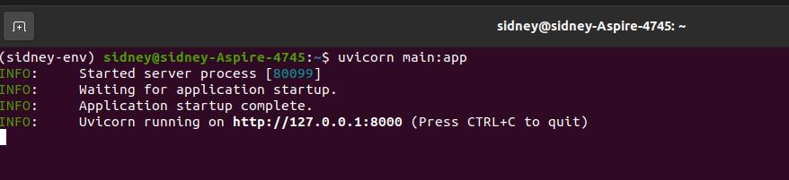
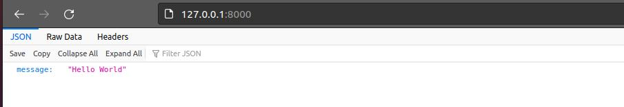
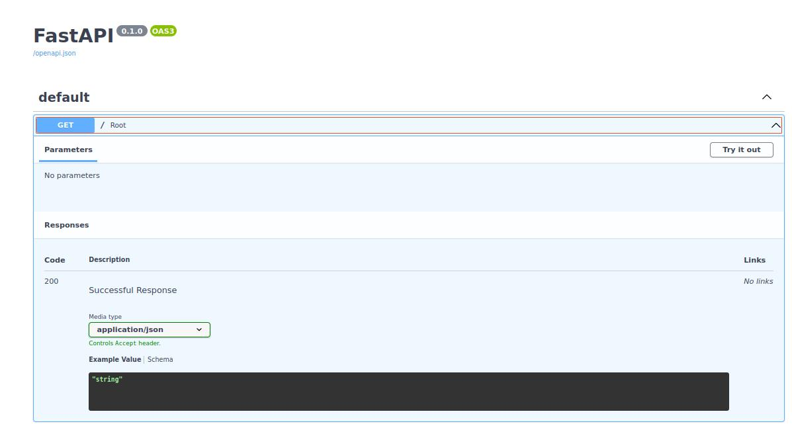

Python FastAPI.
O FastAPI é um framework web Python para construção de API’s de forma rápida e eficiente.
O FastAPI tem um carregamento rápido, sendo comparado a velocidade do Nodejs e Go.
Com códigos simples, conseguimos subir API’s rest rapidamente.
Uma feature interessante é a documentação swagger que é feita automaticamente.
O framework foi desenvolvido para simplificar a vida do desenvolvedor e entregar uma API rest robusta.
Instalação e exemplos.
Vamos fazer a instalação do FastAPI e uvicorn via pip3(Python3):
$ python3 -m pip install fastapi uvicorn[standard]
Agora vamos criar uma API com um endpoint GET, criando um arquivo Python main.py com código abaixo:
Podemos executar com o comando abaixo:
uvicorn main:app

Para verificar o endpoint, execute no browser: http://127.0.0.1:8000

No browser digite http://127.0.0.1:8000/docs para verificar a documentação swagger:

Conclusão.
O FastAPI pode ser considerado um micro framework e pode ser muito útil para construção de API’s rest que precisam ser construídos rapidamente ou para criação de protótipos.